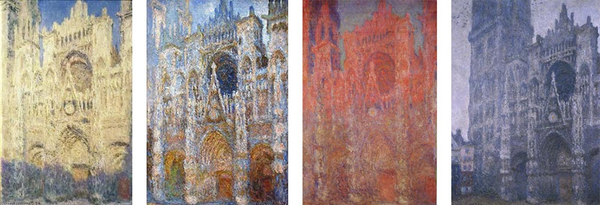

For my final project in Fundamentals of Computational Media Design (MAS.110) I made Timeless Art, a website that captures the appearance and changes of works of art from distinct art movements as if they had been painted at different times of the day.
I was inspired by Monet's Rouen Cathedral, where Monet captured the cathedral at different times of the day.
The website displays a painting that takes up the whole screen. The painting darkens or lightens depending on the time of the day to simulate light changes. Scrolling down will show a menu to run a full day demo or to change the image shown.